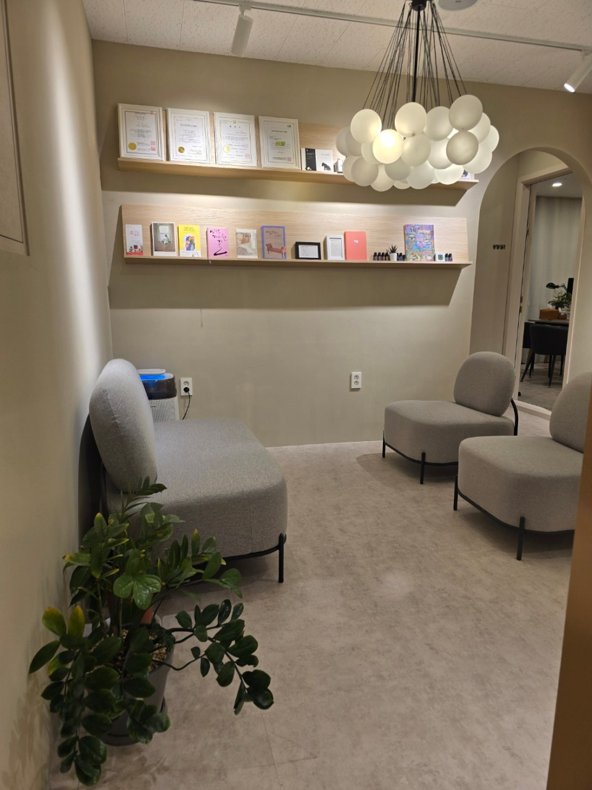
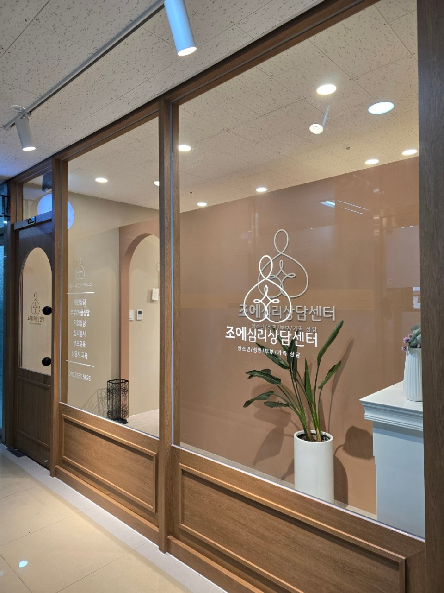

조에심리상담센터 소개
마음의 평화와 성장을 위한 심리상담 전문 기관

마음의 여정을 함께하는 조에심리상담센터
'조에'는 일상 속 다양한 심리적 어려움이 찾아올 때 나를 찾아 떠나는 여정을 안내하는 여러분들의 '힐링 가이드' 입니다. 나를 만나고 나다움을 회복하여 새롭게 성장하도록 도와드립니다.
저희 센터는 심리상담 분야에서 가장 권위 있는 학회인 한국상담심리학회와 한국상담학회가 공인하는 자격증을 소지하고 있으며 해당 학회의 윤리 규정을 준수하고 있는 기관입니다.
청소년, 대학생, 다양한 연령대의 성인을 대상으로 개인상담, 부부/커플상담, 가족상담, 기업상담을 진행하고 있습니다.
주요 상담 영역
조에심리상담센터는 다양한 심리적 어려움을 다루며,
다음과 같은 주요 영역에서 전문적인 도움을 제공합니다.
관계와 부적응
- 커플 관계 갈등
- 부부 소통 문제
- 직장 내 대인관계
- 가족 간 갈등
정서 문제
- 우울, 불안, 공황
- 분노조절
- 무기력, 자존감
- 스트레스 관리
학업 및 진로
- 진로 탐색과 결정
- 학습 전략
- 주의집중력 향상
- 시간관리
트라우마 및 적응
- 트라우마 회복
- 직장 번아웃
- 이혼/이별 적응
- 직업 전환기 적응
조에의 철학

이름의 의미
조에(ZOE)는 '풍요로운 삶'이라는 의미의 그리스어에서 유래했습니다. 조에심리상담센터는 심리적 어려움을 겪고 있는 내담자들이 자신의 내면을 이해하고 삶의 의미와 기쁨을 되찾을 수 있도록 돕는 것을 목표로 합니다.
우리의 믿음
우리는 모든 개인이 자신만의 고유한 가치와 잠재력을 가지고 있다고 믿습니다. 전문적인 상담을 통해 내담자가 자신의 감정을 이해하고, 생각의 패턴을 인식하며, 건강한 관계를 형성할 수 있도록 지원합니다.
상담 원칙
조에심리상담센터는 내담자의 프라이버시와 존엄성을 존중하며, 모든 상담 과정에서 윤리적 원칙을 준수합니다. 우리는 지속적인 전문성 개발과 최신 상담 기법의 학습을 통해 최상의 서비스를 제공하기 위해 노력하고 있습니다.
함께 시작하는 마음의 여정
조에심리상담센터와 함께 행복한 일상으로의 여정을 시작하세요.